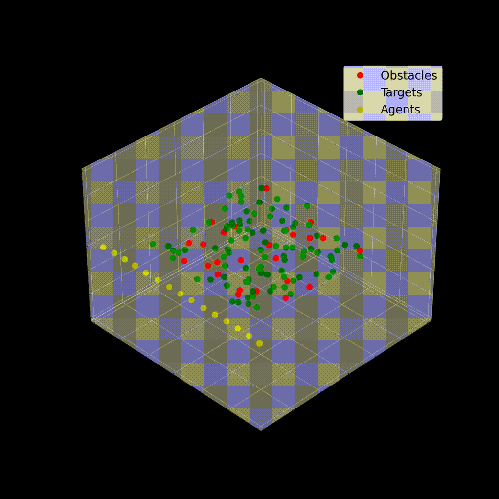
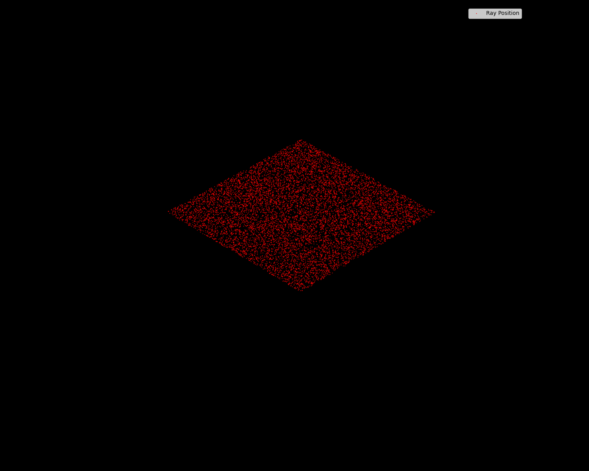

Brian Matthew Howell
About
I am a computational engineer focused on large-scale numerical optimization and simulation, with applications spanning physics, machine learning, and design automation. I have built high-performance computing systems and applied optimization frameworks for industrial-scale problems at Apple, Google X, and Lawrence Livermore National Laboratory.
My Ph.D. from UC Berkeley’s Multi-physics Simulation and Optimization Laboratory centered on stochastic and gradient-based optimization for non-convex numerical simulation. Earlier, I earned my B.Sc. in Chemical Engineering from Brigham Young University, concentrating on control theory and optimization.
I am now focused on deepening my work at the intersection of technical systems, product, and organizational design—building platforms and frameworks that connect advanced computation with broader business and technological impact.
Here are some snapshots of my public works.
Engineering Bits







Engineering Atoms

Personal
In personal life I have a variety of interests including running very long distances, foreign film, olives, olive oil, discrepancies between Talebian philosophy and Talebian tweets, Schumpeterian and Thielian economics, Jewish atheists, 1980's Japan, 1980's New York, 2000's Silicon Valley, Indian food in England, Indian food in India, desert wealth, and sliding the word “optimisation” into conversations.
Graduate School Notes
I am currently compiling and transcribing all of my notes from graduate school into a numerical computing handbook. This is far from complete, but I refer to it frequently for equations and derivations.
You can find my dissertation at: